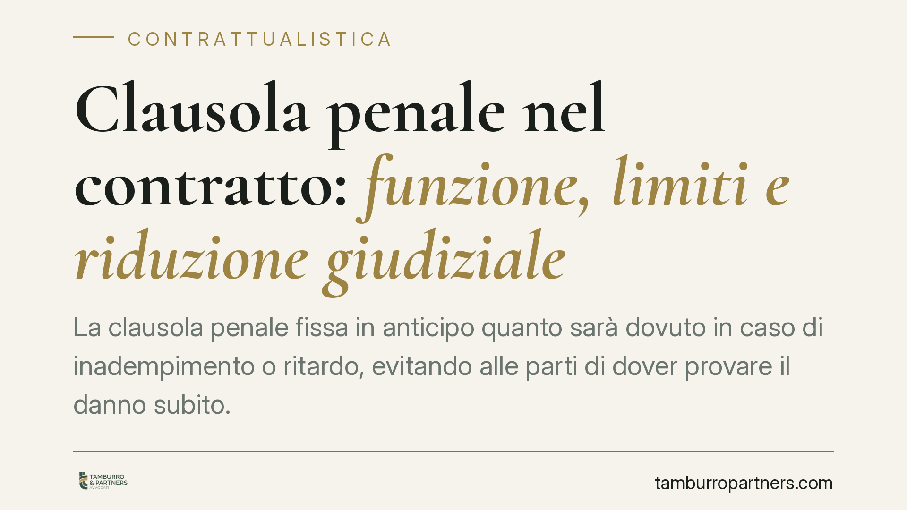

Clausola penale nel contratto: funzione, limiti e riduzione giudiziale
La clausola penale fissa in anticipo quanto sarà dovuto in caso di inadempimento o ritardo, evitando alle parti di dover provare il danno subito. Ma non è uno strumento sanzionatorio illimitato: il giudice può ridurla quando l'importo risulta manifestamente eccessivo. Conoscerne funzione e confini è essenziale prima di firmare o di far valere una penale.

Cos'è e a cosa serve la clausola penale
La clausola penale è la pattuizione con cui le parti stabiliscono in anticipo la somma che il debitore dovrà pagare in caso di inadempimento o di semplice ritardo nell'esecuzione della prestazione.
La sua utilità è pratica: chi subisce l'inadempimento non deve dimostrare l'esistenza e l'ammontare del danno, perché la misura del risarcimento è già stabilita nel contratto. È un meccanismo di semplificazione e di garanzia, non una punizione.
È importante sgombrare il campo da un equivoco frequente. La penale non ha scopo sanzionatorio verso la parte inadempiente: serve a liquidare preventivamente il danno e a rafforzare l'impegno contrattuale. Questa distinzione, ribadita anche dalla giurisprudenza della Corte Suprema, incide direttamente sui limiti entro cui la clausola può operare.
Inquadramento normativo
La disciplina di riferimento è l'art. 1382 del codice civile. La norma prevede che la clausola con cui si conviene che, in caso di inadempimento o di ritardo, uno dei contraenti sia tenuto a una determinata prestazione, ha l'effetto di limitare il risarcimento alla prestazione promessa, salvo che sia stata convenuta la risarcibilità del danno ulteriore.
Due conseguenze pratiche discendono dalla lettera della norma. La prima: la penale è dovuta a prescindere dalla prova del danno effettivo. La seconda: il risarcimento resta di norma contenuto entro l'importo della penale, salvo che le parti abbiano espressamente previsto la risarcibilità del danno che eccede quella soglia.
Accanto all'art. 1382 c.c. opera il potere del giudice di ridurre la penale quando essa sia manifestamente eccessiva, tenuto conto dell'interesse che il creditore aveva all'adempimento. La riduzione può intervenire anche quando l'obbligazione principale sia stata eseguita solo in parte. Secondo l'orientamento consolidato della Corte Suprema, questo potere può essere esercitato d'ufficio, cioè anche in assenza di una specifica richiesta della parte inadempiente.
Implicazioni pratiche
Per chi predispone un contratto, la clausola penale è uno strumento di tutela efficace, ma va calibrata. Un importo sproporzionato non garantisce affatto un incasso pieno: espone al rischio concreto che il giudice lo riduca, vanificando l'effetto deterrente che si voleva ottenere.
Per chi subisce la richiesta di pagamento di una penale, la leva difensiva esiste ed è concreta. Si può contestare l'eccessività dell'importo o eccepire l'adempimento parziale, chiedendo al giudice di ridurre la somma dovuta.
Un ulteriore aspetto riguarda il danno ulteriore. Se il contratto non prevede espressamente la risarcibilità del danno che supera la penale, il creditore non potrà pretendere nulla oltre l'importo pattuito, anche se il pregiudizio effettivamente subito è stato maggiore. Chi vuole conservare questa possibilità deve inserirla in modo chiaro nel testo.
Cosa fare in concreto
- Calibra l'importo sull'interesse reale all'adempimento: una penale proporzionata regge meglio a un eventuale controllo del giudice.
- Precisa l'oggetto della clausola: specifica se copre l'inadempimento totale, il ritardo o entrambi, indicando gli eventi che la fanno scattare.
- Prevedi espressamente, se lo desideri, la risarcibilità del danno ulteriore: senza questa previsione il risarcimento resta limitato alla penale.
- Se ricevi una richiesta di pagamento sproporzionata, valuta l'eccezione di eccessività manifesta e l'eventuale adempimento parziale.
- Fai verificare il testo prima della firma: una formulazione ambigua rischia di rendere la clausola inefficace o di ridurne la portata.
La clausola penale resta uno degli strumenti più utili per gestire il rischio contrattuale, purché sia costruita con misura e coerenza rispetto agli interessi in gioco.
---
*Contributo informativo a cura di Tamburro & Partners - Avv. Giuseppe Tamburro. Non costituisce parere legale.*
Ogni contratto ha il suo equilibrio.
Se vuoi una revisione delle clausole o una redazione su misura, scrivi allo studio. Ti rispondiamo entro un giorno lavorativo.